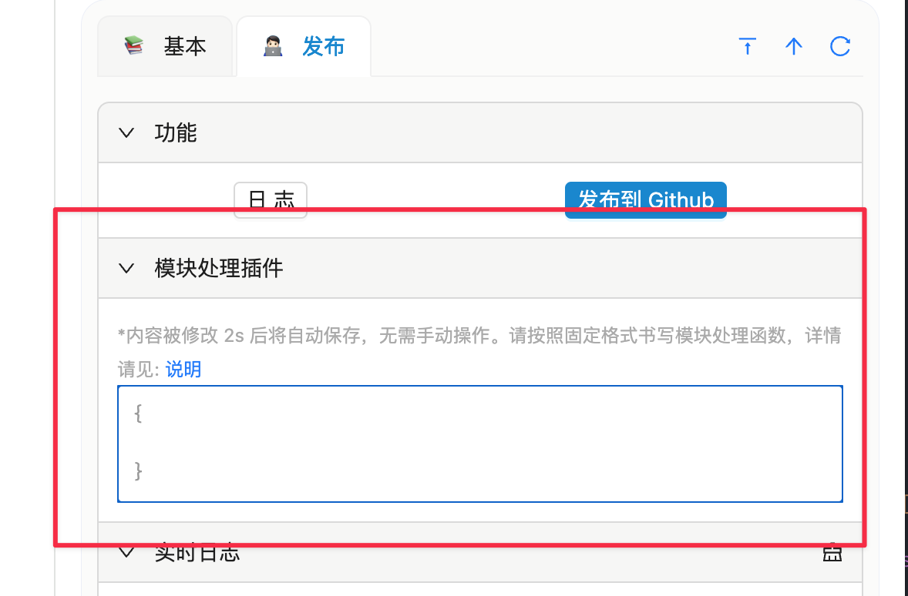

Module Conversion
Why Customize Conversion?
The formatting of Notion Flow content is based on Github Markdown, but some modules in Notion cannot be converted into standard Markdown format. There are two typical scenarios:
- Notion Bookmark does not have a corresponding format in standard Markdown. Notion Flow defaults to link format.
- The Caption in images in Notion, if you want to set it as the image description in a blog, Notion Flow will ignore this property by default.
Supported Modules
Perhaps you don't want me to pre-set the Notion module to Markdown format for you, so this plugin supports you in writing how to convert Notion modules yourself. Besides the three unsupported modules described below, all other modules are supported, and I have even added additional properties for some modules for your convenience.
Unsupported Module Handling
For unsupported modules such as embed, toggle, template, etc., you need to write the module conversion function yourself according to the requirements described below. If a module is not a standard Markdown module and you haven't written the corresponding module conversion function, then that module will be ignored.
Modules Not Convertible to Standard Markdown
Due to the nesting capability of lists in Notion, their child elements are obtained through the interface recursively, which is more complicated compared to other modules. The Markdown syntax for lists is relatively uniform, so custom conversion is not supported. This includes:
- to_do
- numbered_list_item
- bulleted_list_item
Additional Module Properties
In addition to the default properties of Notion modules, I have added additional properties for each module. The additional properties for each module are as follows (some fields may override Notion module fields unless otherwise specified, they are all string):
- paragraph
- text: Text content without formatting
- bookmark
- title: Title
- desc: Description
- img: Small image on the left side of the bookmark (address is the favicon of the bookmark reference link, may not display correctly due to the same-origin policy)
- image
- url: Image address (final address after uploading to OSS and adding CDN address)
- caption: Image description
// Processed internally as ``
- heading_1/2/3
- text: Text content without formatting
- table
- rows: List of row child elements of the table, which includes the cells field, see the Notion API documentation for details. The default processing internally is:
block.rows.reduce((prev: string, curr: string, index: number) => { const cells = curr[curr.type].cells; let divider = ''; const cellsString = cells.map((cell: any, key: number) => { // Note: cell is rich_text, here transform to string const str = `| ${_inline(cell)} `; if (key === cells.length - 1) { divider += `| ---------- |\n`; return `${str}|` } divider += `| ---------- `; return str; }).join(''); return prev += `${cellsString}\n${index === 0 ? divider : ''}`; }, '')
- rows: List of row child elements of the table, which includes the cells field, see the Notion API documentation for details. The default processing internally is:
- quote
- text: Text content without formatting
- color: Border color on the left side of the quote, stolen from the Notion website
- callout
- icon: Icon on the left side of the callout
- text: Text content without formatting
- color: Font color of the callout
- bgColor: Background color of the callout
- divider
- No additional properties
- video (including file types and external links such as YouTube and Bilibili)
- block.type === 'file'
- url: Final address after uploading to OSS and adding CDN address
- caption: Video description
- suffix: Video suffix
- block.type === 'external'
- yid: YouTube video id
- bid: Bilibili video id
- caption: Video description
- url: External video address
- block.type === 'file'
- code
- text: Code text content without formatting
- equation
- text: Formula text content without formatting
How to Use Custom Module Conversion?
First, enable the publishing function in the plugin settings (obviously). Then go to "Settings → Advanced · Module conversion" and use the two-pane editor (since 0.4.5 module conversion moved from the side panel to the settings page): write the conversion functions on the left, pick a block type on the right to inspect "block → string", and click "Run test" to verify live — it covers 13 customizable block types.

Formatting Requirements
Tip
If the written function does not meet the requirements, the default module conversion logic will be used.
The configuration writing is very simple, just meet the following conditions:
-
The configuration is an object, where the keys are module names, and the values must be functions with a function name. Using an anonymous function will cause an error, such as
{ bookmark: function (block) {} // Error! } -
The first line of the configuration object must not be empty.
-
The function value associated with the key in the configuration object takes the module (along with the additional properties I provided) as a parameter, and the name is
block. -
The return value of the function is the final Markdown value after converting the module.
Configuration example:
{ // <-- First line must not be empty!
bookmark: function any_name_you_want(block) {
return `[${block.title}](${block.url})`;
},
image: function any_name_you_want(block) {
return ``;
}
}